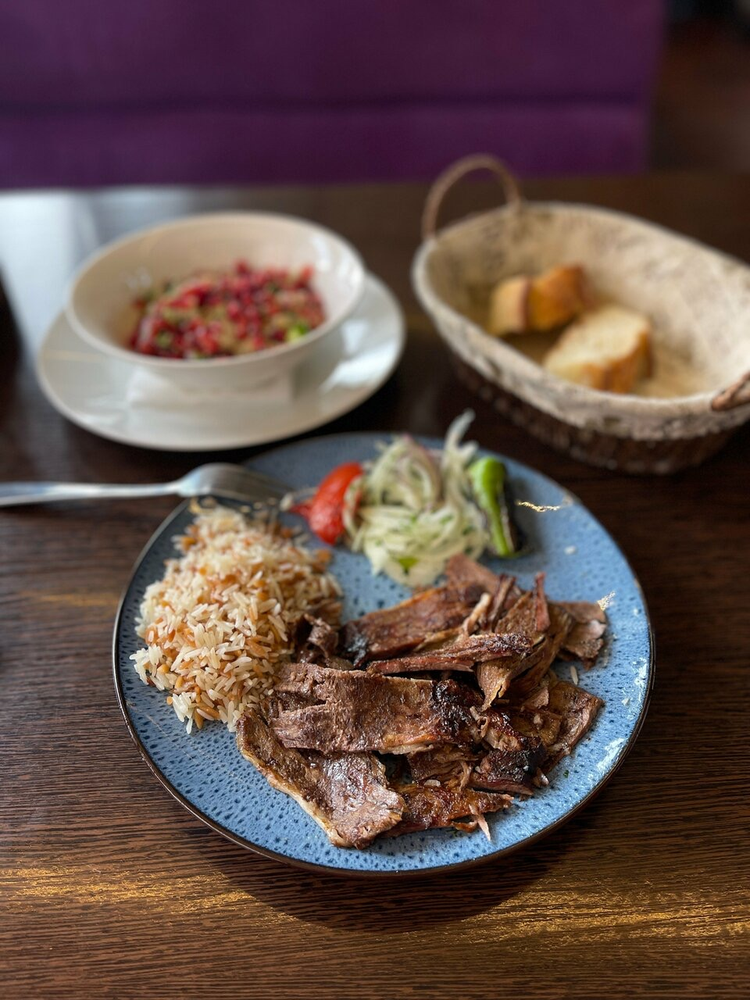
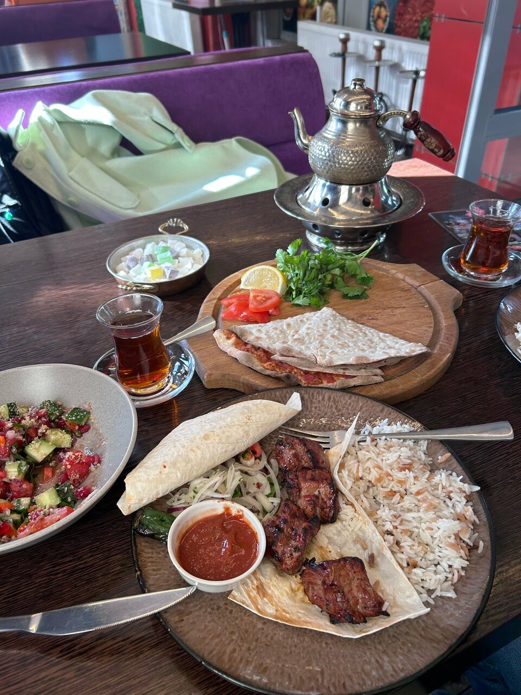
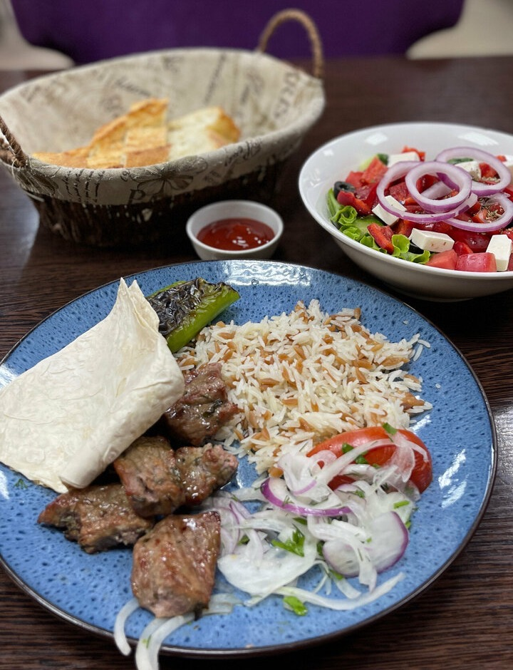
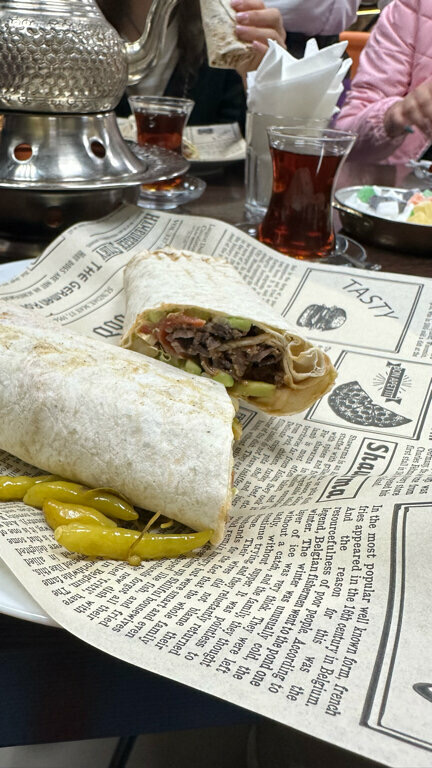
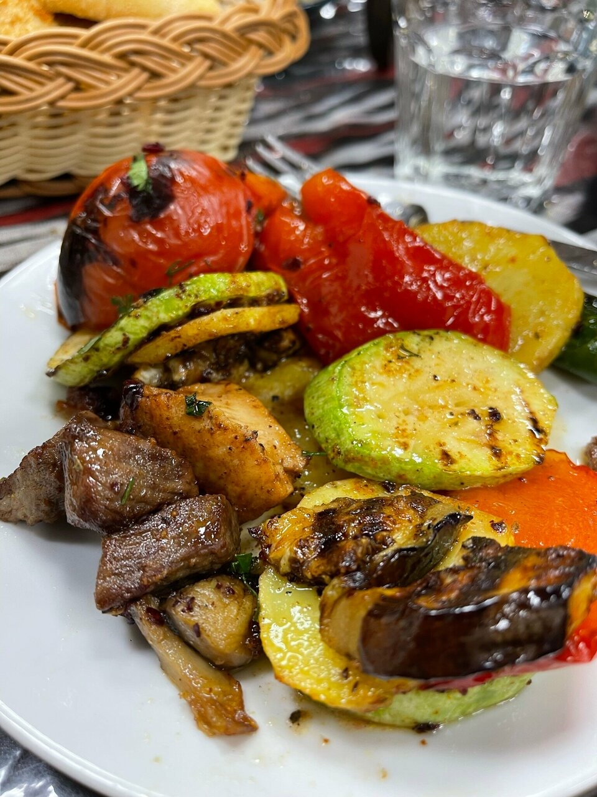
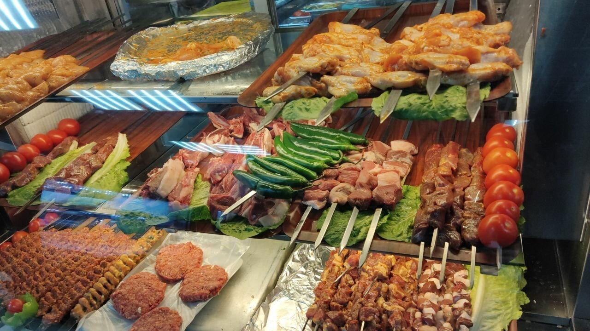
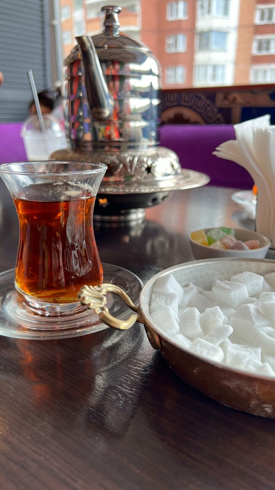
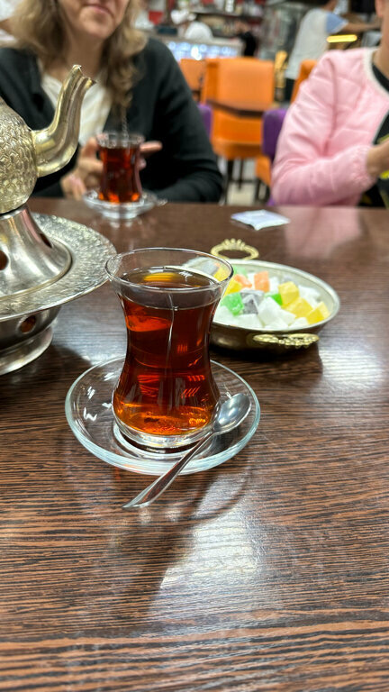
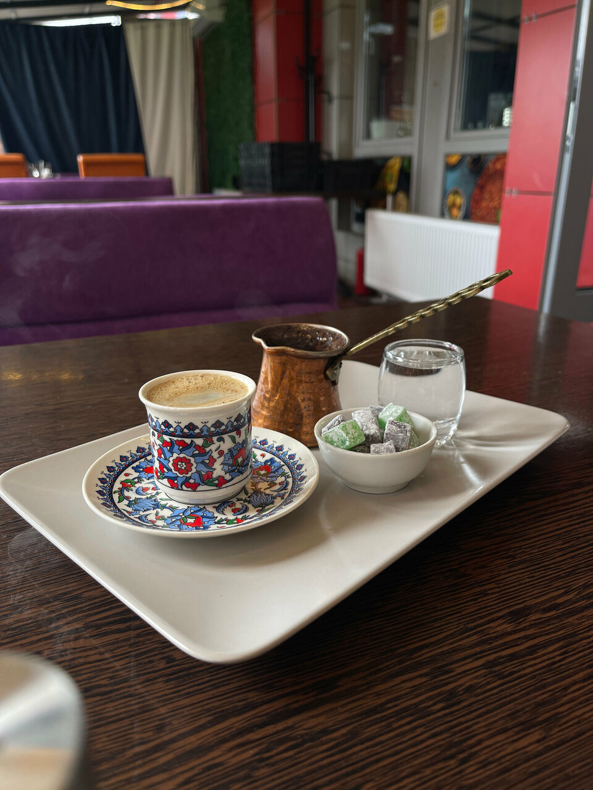

Донер
Говядина с бараниной, рис, лук и печёный перец.
Павшинская пойма, Красногорск
Турецкая кухня и мангал на Подмосковном бульваре, 1А. Каждый день с 8:00 до 23:00.
Написать в WhatsApp

Говядина с бараниной, рис, лук и печёный перец.

Кирилл Д.Мясо свежее, приготовлено всегда шикарно. Постоянно захожу сюда на ужин

В лаваше, с маринованными перчиками. Можно взять с собой.

Кабачок, перец, помидор и баклажан с мангала, к ним мясо.

РозаЧисто все, открытые витрины видно как работают
Оксана ХарламоваЯ люблю острое, поэтому Адана-Кебаб для меня идеален.
Катя ПечаеваЛахмаджун лучше, чем в Анталии, я их сотни перепробовала
Турецкий суп из чечевицы.
К чаю или с собой.
Alexander KulkovДонер в турецком хлебе - лучшее, что я пробовал в последнее время.
Ещё из говядины, куриной грудки и крылышек.
С мангала, с рисом или овощами.
Из узбекской части меню.

Чай наливаем в стаканы-армуду, кофе варим в медной джезве. К чаю подаём лукум.
Аленка К.Безумно приятно, что к чаю в подарок дают лукум…
Анжелика БеловаКофе по-турецки со сладостями-моя любовь!


Елена КонгПостоянно возвращаемся из-за хорошего обслуживания официанта Бахрома.
Бахром встречает гостей в зале. Вместе с ним работают Суннат, Камиль, Лёха, Вахид, Фирдавс и Билол.
Самое любимое место в пойме
Альвина
Надежда Николаева…приезжали на машине из Митино, брали на вынос ))) а недавно потеплело и приехали на велосипедах…
Анжелика БеловаЖивем в Нахабино, искали с мужем что-то новенькое и интересное, нашли это заведение.
alexey.pv.m9Из центра ( Полежаевская ) езжу на обед в Красногорск